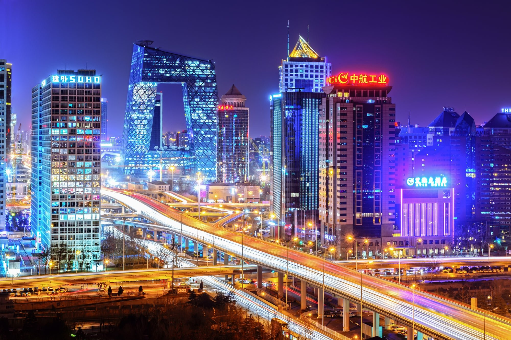
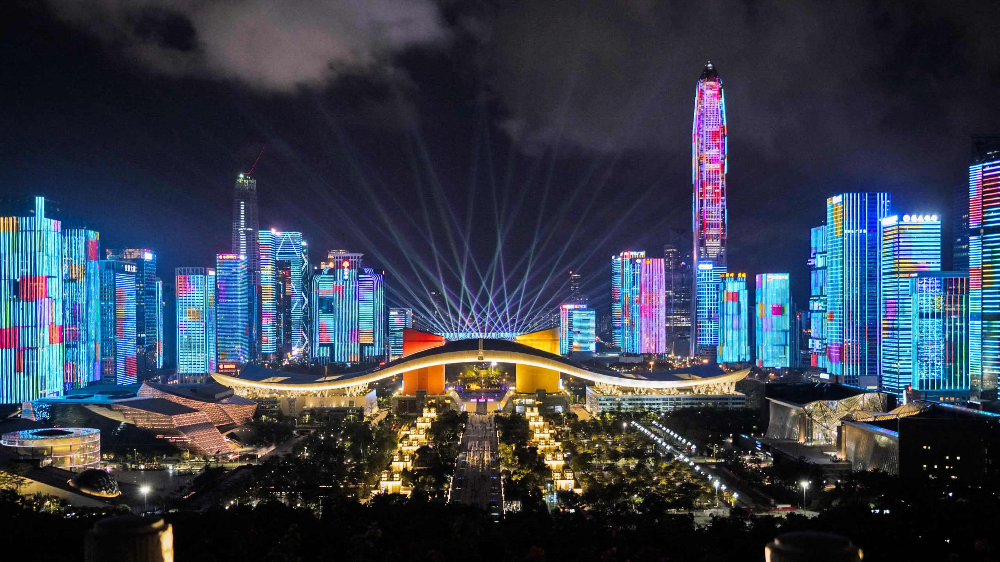
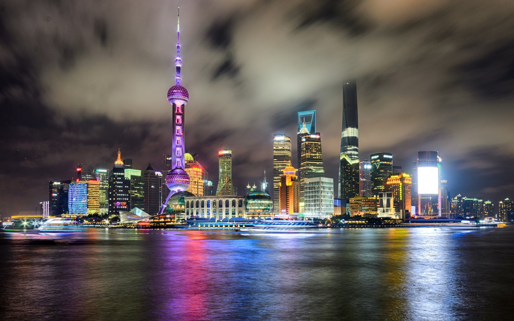
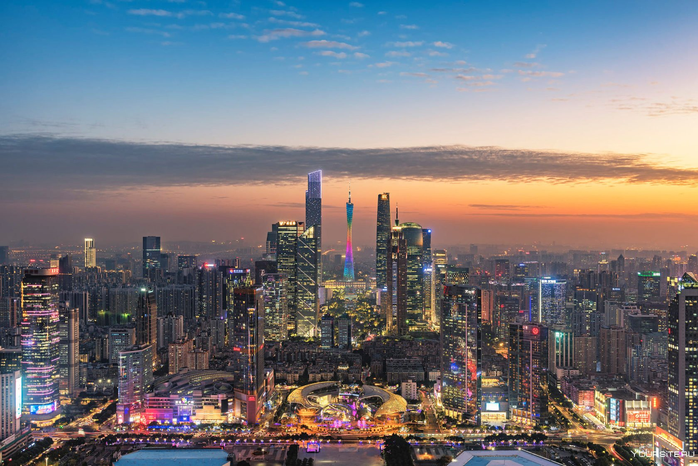

Пекин (Beijing)

Пекин – столица Китая, политический и культурный центр страны; город с тысячей лиц и настроений, удивительным образом сочетающий в себе суетный ритм современной жизни и далекие отголоски западных ценностей без какого бы то ни было ущерба для собственных традиций. За более чем 3000-летнюю историю этот противоречивый и загадочный азиатский мегаполис бессчетное количество раз исчезал с карты и отстраивался заново, причем все с большим и большим размахом. Безликие спальные районы, словно из советского прошлого, пронзающие облака и ослепляющие ночной подсветкой небоскребы, живописные средневековые хутуны – в современном Пекине нашлось место всем архитектурным стилям и эпохам. Оцените чарующую магию великой Азии, растворившись в нескончаемом человеческом потоке пекинских улиц и погрузившись в пеструю, шумную и невероятно притягательную реальность одной из древнейших столиц планеты.
Шэньчжэнь (Shenzhen)

Шэньчжэнь — крупный китайский город, расположенный на юге страны, возле границы с Гонконгом. Он построен в устье Жемчужной реки, на побережье Южно-Китайского моря. В мире Шэньчжэнь воспринимают как экономическое чудо. Его называют «городом парков и небоскребов», а также китайской «Силиконовой долиной».
Шанхай (Shanghai)

Шанхай — самый населенный город в мире, расположен в устье реки Янцзы. Первоначально это была маленькая приморская рыболовецкая деревня, теперь же – громадный город, крупный порт, сочетающий культуру современного и традиционного Китая.
Гонконг (Hongkong)

Гонконг — государство в государстве со своими законами, порядками и культурой. Это место встречи Запада и Востока, где высокие технологии соседствуют с традиционным укладом жизни, небоскрёбы — с рыбацкими деревушками, а чопорные торговые центры – с хаотичными плавучими рынками. Исторически Гонконг — бывшая колония Великобритании, а в настоящее время – специальный административный район Китая, поражающий темпами своего прогресса.
Гуанчжоу (Guangzhou)

Многоликий Гуанчжоу, один из древнейших городов Китая, расположился на юге страны и является столицей приморской провинции Гуандун. Этот колоссальный мегаполис, уступающий по значимости лишь Пекину и Шанхаю, раскинулся в защищенной от штормовых ветров бухте у дельты полноводной Жемчужной реки, несущей свои воды в Южно-Китайское море. Несколько ее притоков также входят в городскую черту Гуанчжоу.
Численность городов Китая
| Город | Количество людей |
|---|---|
| Пекин | 21 705 000 |
| Шэньчжэнь | 11 908 400 |
| Шанхай | 24 152 700 |
| Гонконг | 7 333 200 |
| Гуанчжоу | 14 043 500 |